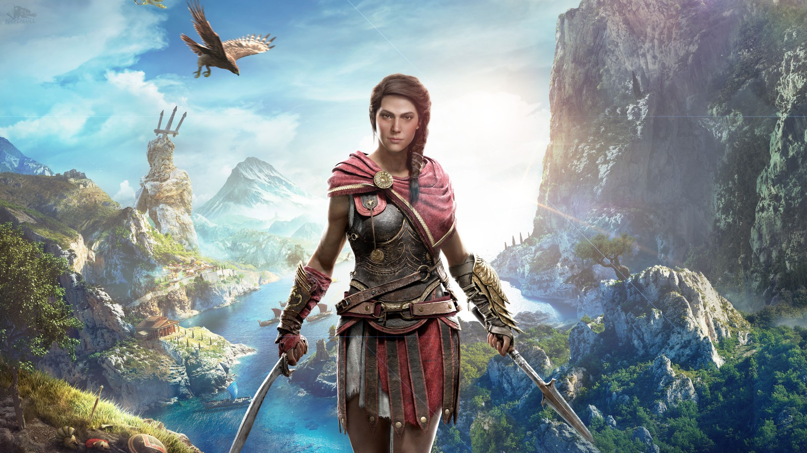

Assassin’s Creed Odyssey ist ein Action-Adventure-Computerspiel, das von Ubisoft entwickelt wurde.
Es ist der
elfte Teil der Hauptserie von Assassin’s Creed und der Nachfolger des 2017 erschienenen Assassin’s Creed Origins.
Es wurde im Oktober 2018 für die Plattformen PlayStation 4, Microsoft Windows und Xbox One veröffentlicht.
Im
November 2019 folgte die Veröffentlichung für Google Stadia.
Der thematische Rahmen des Spiels ist eine alternative Version des Peloponnesischen Krieges. Man beginnt das Spiel als Söldner und Enkel des spartanischen Königs Leonidas I. und erbt dessen gebrochenen Speer, der zu einer Waffe geschmiedet wird, die dem Spieler besondere Fähigkeiten im Kampf verleiht. Als Söldner kämpft man entweder für oder für Sparta. In dem Spiel reist man durch das Antike Griechenland. Und stösst auf einen geheimen Orden, der die Weltherrschaft will. Ausserdem ist man auf der suche nach seiner Familie da der Orden irgendetwas von der Familie will. Anhand der Entscheidungen die man im Spiel trifft gewinn entweder Sparta oder Athen.
In Assassin's Creed Odyssey dürft ihr zu Beginn des Spiels zwischen zwei Helden wählen, die obendrein noch unterschiedlichen Geschlechts sind. Da wäre zum einen die geschickte und charismatische Kassandra und zum anderen der entschlossen wirkende Alexios. Habt ihr euch einmal für einen der beiden entschieden, könnt ihr die Wahl nicht umkehren. Hintergrundgeschichte von Alexios und Kassandra Egal, welchen der beiden Personen ihr wählt, die Hintergrundgeschichte der beiden ist komplett identisch. Alexios und Kassandra sind gameplaytechnisch identisch und weisen dieselben Fähigkeiten, Statistiken und alles andere auf. Es gibt keine Unterschiede, sodass ihr nicht für eure Wahl bestraft werdet. Beide können zudem dieselbe Kleidung und Ausrüstung tragen, wobei einige leicht anders aussehen, da sie der Figur des Charakters angepasst werden. Auch hier bleiben die Statistiken ansonsten gleich. Die Dialoge verlaufen ebenfalls überwiegend identisch ab, allerdings verfügen Alexios und Kassandra manchmal über charaktereigene Reaktionen auf das Geschehen. Auswirkungen auf eure Entscheidungen haben sie nicht.
In Assassins Creed Odyssey hat man Verschiedene Fähigkeiten die man einsetzen kann Jede dieser Fähigkeiten verbraucht Adrealin dies bekommt man wärend den Kämpfen. Im spiel gibt es unterschiedliche Waffen wie: Schwerter, Speere, Dolche, Keulen. Äxte, Dreizacke und natürlich Bögen.
Höchstleistungsangriff
Ein Extrem Starker Angriff der von der Waffenart abhängt. Der Angriff benötigt drei Adrealinsegmente, dieser angriff macht sehr viel Schaden.
Eiliges Attentat
Wirft den Speer auf einen entfernten Gegner, um ein Attentat auszuführen dieser Angriff kann Verkettet Werden, dieser angriff benötigt ein Adrealinsegment.
Zorn der Blutlinie
Mit diesem angriff Schlägt man fünf mal auf den Gegner mit dem Speer ein und generiert drei Adrealinsegmente.
Assassin's Creed Odyssey bildete mit den griechischen Inseln ein Gebiet ab, das in der Realität etwa 233.000 Quadratkilometer umfasst. Im Spiel wurde, das auf eine Mapp-Größe von 233 Quadratkilometern übertragen, die ganze map kann man zu Fuss oder mit dem Schiff erkunden. Auf der Karte sind unzählige Fragezeichen, die man Erkunden kann. Bei den Fragezeichen Handel es sich um Dörfer, Festungen, Höhlen, Banditenlager, Schätze, Gräber und noch vieles mehr. Bei fast jedem Fragezeichen gibt es Aufgaben die man erledigen kann. Wenn man alle aufgaben für ein Ort abgeschlossen hat ist der Ort beendet. Bei den Aufgaben handelt es sich um Sachen wie. Schätze Plündern, Kommandanten töten, Rätsel finden. Es gibt auch sogenannte Synchronisationspunkte, Diese sind meist an einem hohen Ort. Wenn man an die Spitze klettert, kann man das Spiel Synchronisieren und später an diese Stelle Schnellreisen. Die ganze Mapp ist in 38 Gebiete eingeteilt. Ein Gebiet kann entweder von Sparta oder von Athen unter Kontrolle Stehen. Sobald man eine Eroberungsschlacht durchführ ist das Gebiet dann unter der Kontrolle des anderen.